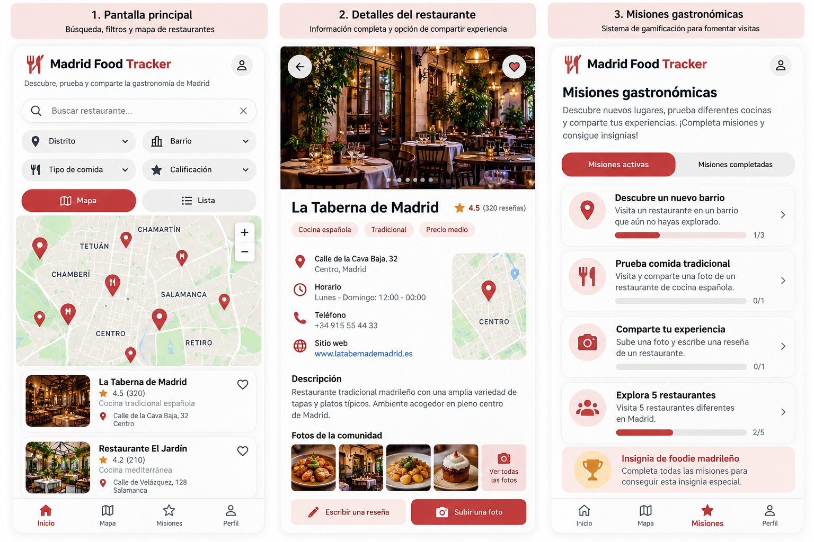

Madrid Food Tracker es una aplicación creada para los amantes de la gastronomía que buscan contastemente nuevos lugares para comer o para aquellos que simplemente no tienen ni idea de donde comer. Es una aplicación especializada en proporcionar información sobre los diferentes restaurantes y puestos de comidas en la ciudad de Madrid. Consiste basicamente en un mini mapa donde puedes filtrar por zonas y ver los locales de comida que hay alrededor y ver su infomarción como el tipo de comida, calificación, descripción del local, datos de contacto etc. Además, la aplicaión cuenta con un sistema de "misiones" en el que consiste en subir una foto de la comida o las instalaciones de los locales que hayas ido, de esta manera se busca aumentar las visualizaciones del sector de la hostelería en Madrid y mejorar el sector turistico.
Se busca un diseño limpio y sencillo de manera que sea facil de utilizar. Consta de 3 secciones: En la pagina principal los usuarios podran buscar los restaurantes por nombre, aplicar los filtros y ver el mapa. Habrá otro apartado donde se podrá consultar los restaurantes guardados y visitados. Además de ello, se puede ver las publicaciones de otros usuarios e información de los restaurantes. Por último, hay una sección de misiones y recompensas.
